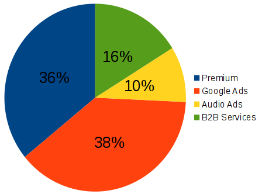
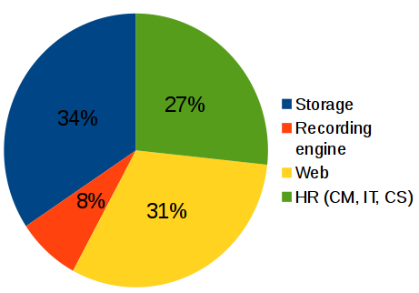

Investor Deck
WHERE RADIO GOES VIRAL, ON-DEMAND AND SOCIAL

RadioCut is a place where you can listen to past and current radio shows and cut and share your favorite parts.
The Problem
People want to listen to radio whenever they want and share it
?
How do you link to a piece of radio?
How can tradicional broadcasting converge to Internet age?
Current Solutions
Radio stations web sites
Hard to admin. Bad UX |
Podcasting
Doesn't have radio content. Not real time. |
Hard to discover
The Product
RadioCut is a platform where you can listen to past and current radio shows and you can cut & share radio segments you enjoy.

Team
Guillermo Narvaja: CEO, product manager
Milena Armada: Marketing director, customer support champion
Working together for more than 14 years. Succesfully founded in 2005 a technology company. Still going strong with 11 employees.

Experience in long term projects. Technical and business skills |

Eagerness to start another project completely different and innovative |
Traction
Users
|
Audio Cuts
|
Radios
|
40 minutes session time
Featured in Premios Éter / 40 press mentions
Cut and sharing with Radiocut - A real example

| 
|
Market Opportunity
People want to consume the same content in a single place.


- On demand access
- All in one site
Radio is still the medium with the biggest reach.
Revenues |
Expenses |
Low recording costs (u$s 20 per radio/year), eficient and scalable
+47% EBITDA margin
Marketing and Growth Strategy

- People love their work is mentioned
- Social networks, yet automated. Focus on radio workers.
- Radio stations need a new distribution channel
- Comunication team
Competition
| Radio directory | Radio content | Live | Upload needed | Crowd-sourcing | On-demand | Sharing | |
| soundcloud.com | No | Partial | No | Yes | Yes | Yes | Yes |
| tunein.com | Yes | Yes | Yes | No | No | No | No |
| stitcher.com | Yes | Yes | No | Yes | No | Yes | No |
| Podcasts | No | No | No | Yes | Partial | Yes | No |
| radiocut.fm | Yes | Yes | Yes | No! | Yes | Yes | Yes |
Financials

Assumptions
|
Roadmap
|
Investment
- Product development: mobile app, recommendation engine, better user engagement
- Sales & Marketing
- New markets development
- Team reinforcement